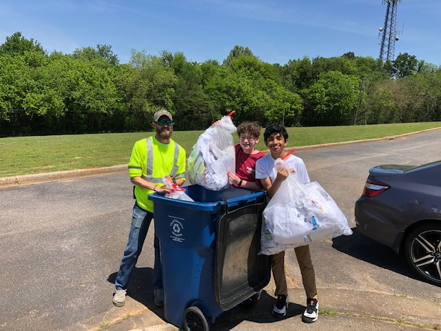
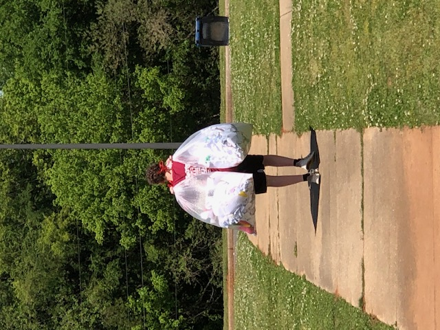
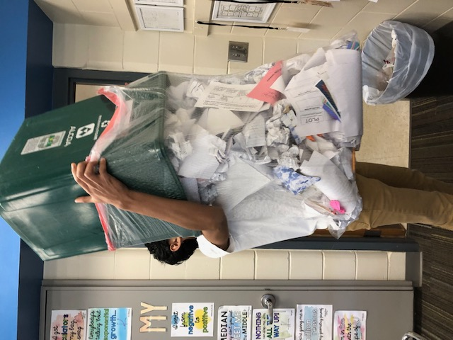
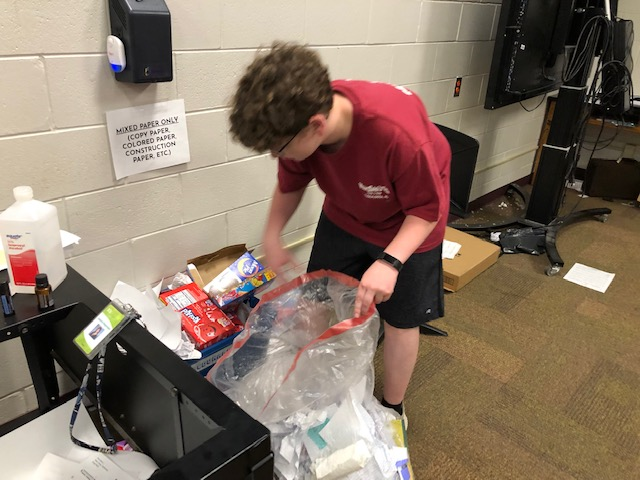
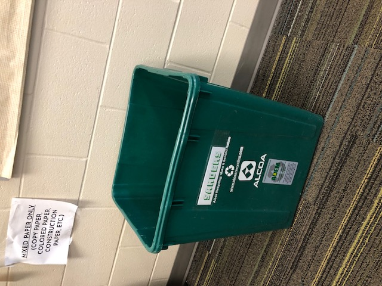
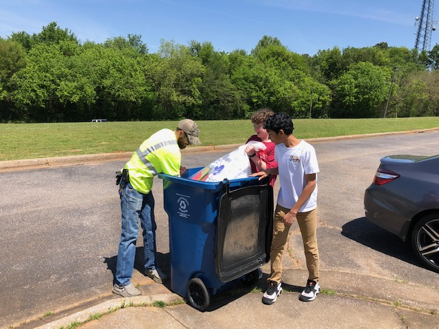
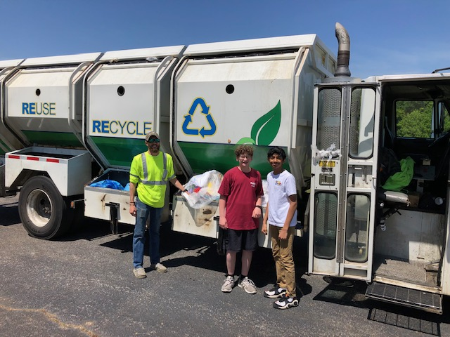

Eagle Recycling is a Passion Project created by Ben Riches and Aditya Gupta with the goal of
creating opportunities to recycle readily available to younger students in school.
These recyclers will learn how to properly recycle, learn about the benefits of recycling, and
hopefully continue to recycle into adulthood. While creating students that know how to recycle,
we have also placed recycling bins in every classroom of our school and created an environmental impact ourselves.
Our project creates an impact in the present
and ensures an impact in the future.
Topic
Our project focuses on the global impact that recycling can create.
An average school can use 2,000 sheets of paper per day (adding up to 32+ billion), and
we believe that we can do our part to help our globe.
Goal
The mission of Eagle Recycling is to create a
positive impact on the world by making opportunities to recycle
in school more readily available.
Who we are
We are a group of students from Tuscaloosa Magnet Schools-Middle with a passion to
create an environmental impact.
While our project will create an impact in the future, we are also creating an impact right now.
To measure our impact, we decided to measure the amount of paper being recycled and the weekly
amounts can be seen in the graph below.
Overall, we've recycled 53 cubic feet of paper, which is enough to fill a large
fridge!
Resources Consulted
Our biggest resource throughout the course of our
project was our mentor, Mrs. Wagenheim. She helped
us navigate the school properly, coordinated with
some outside sources, and brought us back on track
when we had made a few errors.
We also consistently employed the help of the
Tuscaloosa Environmental Services, or TES. They
helped us mainly by collecting the recycling that we
put out by the road, but also in other ways. For
example, they provided us with extra clean recycling bins
when we needed a few more for classrooms.
Finally, we would like to mention the teachers. Through
all of our project, they have been cooperative and
helpful in giving space for our ideas to flourish
and given us time to make sure everything works out.
Gallery

Aditya and Ben with a recycling
collector for the Tuscaloosa Environmental Services

Ben taking out bagged paper to
eventually be recycled by the Tuscaloosa Environmental
Services

Aditya collecting paper from a
classroom recycling bin

Ben collecting paper from a classroom
recycling bin

One of many classroom recycling bins

Ben and Aditya helping a recycling
collector with the TES collect paper to eventually be
recycled

Ben and Aditya finish collecting paper
with a recycling worker.